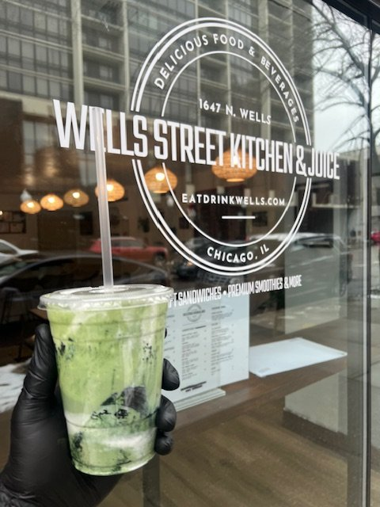
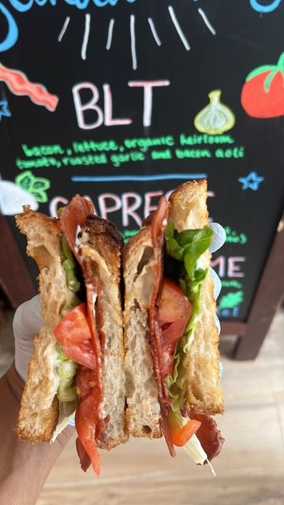
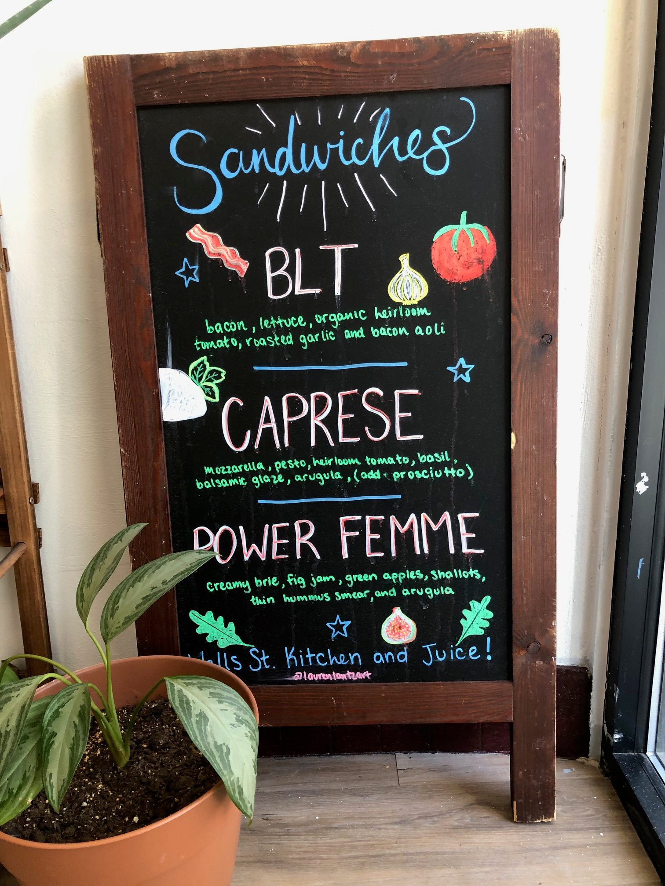
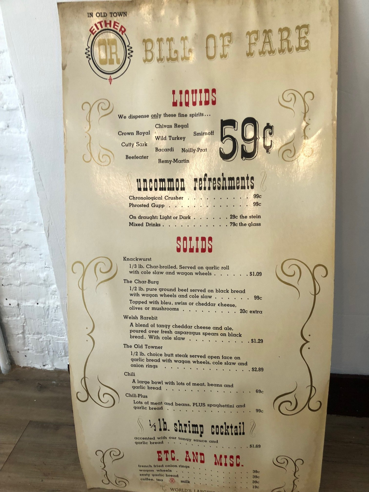
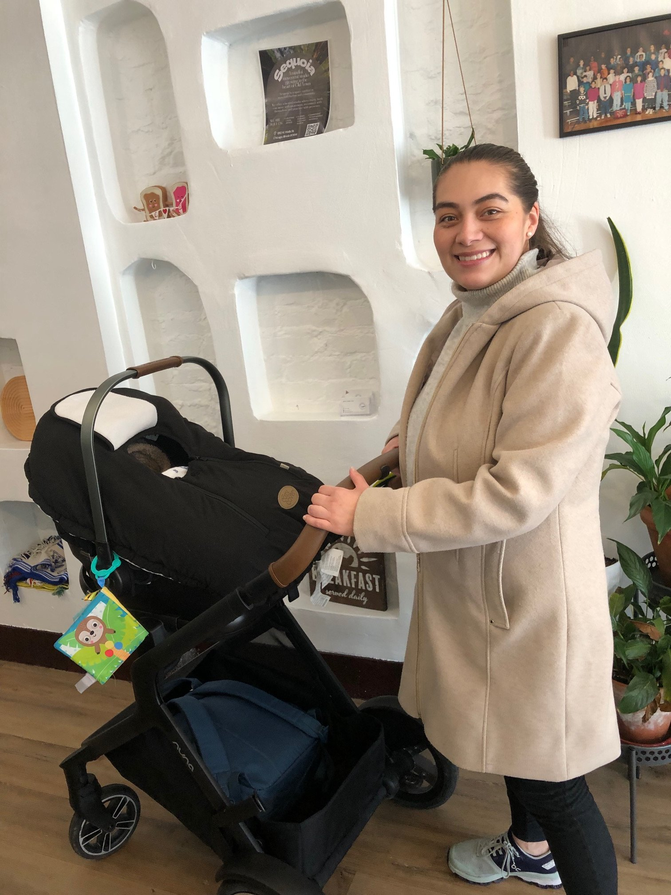

“Wells Street Kitchen & Juice was born from a passion for fresh, healthy food and a love for the Old Town Chicago community. Every day, we source the freshest ingredients to create drinks and meals that nourish both body and soul. Our commitment to quality and our community remains at the heart of everything we do.” — Steven McClellan, founder and owner
On a cold Chicago day, what could be better than comfort food, close to home, served up by a fascinating person? I chose a grilled cheese (three cheeses mixed with aged parmesan) and a strawberry banana smoothie while others in my group gathering at the Wells Street Kitchen & Juice picked sandwiches like the Bro Melt with shaved turkey, bacon-onion jam, sharp Cheddar, smoked chipotle aioli, and arugula and the Power Femme with creamy Brie, fig jam, green apple, shallots, thin hummus smear, and arugula, served up by Steven McClellan whose intriguing career led him back to his beloved Old Town neighborhood. McClellan uses bread from the highly popular La Fournette, a Wells Street neighbor, and arugula is the green of choice with the exception of lettuce on his BLT. The five-star ratings bring in many online orders.

“Make your own jams and sauces and make them different and delicious”—a top Chicago chef who knows what he is talking about advised me. “I also realized that people want classic sandwiches,” McClellan related. “Previous to the Wells Street Kitchen & Juice I sold sausages at festivals here and through Vegandale food and entertainment festivals here across the country. The sauces had to be on point and pleasing and I developed the truffle aioli and other sauces that I use today. I used the aioli I use now on a sausage I named for my best friend Will Miles who has been a teacher at Lincoln Elementary in Lincoln Park.”

A former trader on the Chicago Board of Trade who attended the LaSalle School in Old Town, McClellan ran for Alderman in the 43rd Ward in 2015.
“I have a great love of the Board of Trade. I always wanted to get out there in the pit—there was no adrenalin rush like that. Since traders got off work at 1:15 in the afternoon, we were advised to get a hobby. I started out taking photos but then gravitated to the food business when I got to know the owner of Chicago’s Dog House on Fullerton. I didn’t want my sausages to compete with theirs so I sold vegan ones at the festivals.”
As a child he attended the LaSalle School where his mother taught fifth grade. “We lived on the far South Side but I was there for sleepovers frequently and remember celebrating here when the Bulls won their fifth championship,” he said. “Post college, I lived in a gingerbread house at Hudson and Menomonee for 15 years and learned that Old Town neighbors are phenomenal—I have much nostalgia for that time.”
During his aldermanic campaign McClellan says that he learned much about the corridors in the neighborhood. When the juice bar in his current spot closed he claimed the space right away.

He and his wife and baby daughter live close to his restaurant. “My wife had been living and enjoying the South Loop and she didn’t want to leave. Now she too loves Old Town.”

Sunlight flooding in through the Wells Street window, framed by bouquets of fresh tulips, creates an upbeat mood as takeout customers come and go and McClellan often goes outside to visit with passersby who wave, chat with the mail person and convey the warmth that defines Old Town. He has been known to check on a daily customer who didn’t make it in one day and deliver his sandwich in person.
McClellan and Wells Street Kitchen and Juice are great go-to neighbors.
Wells Street Kitchen & Juice
1647 N. Wells Street, Chicago, IL 60614
Sunday Noon – 4:00 p.m.
Monday 11:00 a.m. – 5:00 p.m.
Tuesday – Saturday 10:00 a.m. – 6:00 p.m.